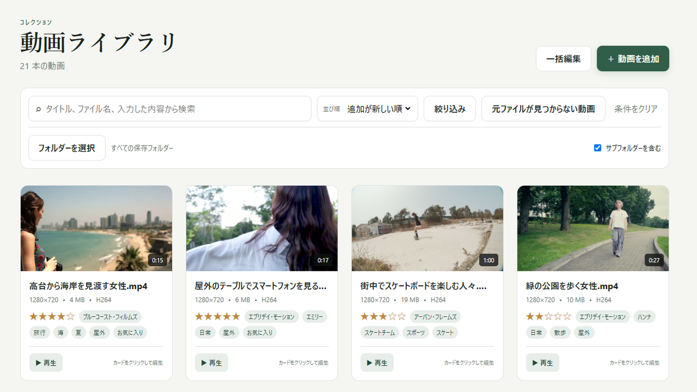

動画を選んで、まとめて登録
複数の動画を選んで、ライブラリにまとめて追加。サムネイルや再生時間、解像度などは自動で取得するので、基本情報を一つずつ入力する必要はありません。
PC内の大量の動画を、ひとつのライブラリへ。
マウスを重ねて動画をプレビュー。管理項目を自由にカスタマイズして整理し、見たい一本をすばやく見つけられます。


複数の動画を選んで、ライブラリにまとめて追加。サムネイルや再生時間、解像度などは自動で取得するので、基本情報を一つずつ入力する必要はありません。
サムネイルにマウスを重ねると、動画のプレビューを再生。動画を開く前に内容を手早く確認できます。再生ボタンを押すと、普段お使いのプレーヤーで動画を再生できます。
一人の出演者に複数の別名を登録できます。動画情報を入力するときは、名前だけでなく別名やメモからも候補を検索。表記が違っていても、同じ出演者として整理できます。
項目名も入力形式も、自分の整理方法に合わせて設定。テキスト、数値、日付、選択肢、複数の値、チェックなど、管理したい情報に合う入力形式を選べます。
たとえば「購入日」は日付、「ジャンル」は選択肢、「感想」は長文テキストに。必要な項目を自由に追加して、自分だけの動画ライブラリを作れます。
登録情報はバックアップ・復元に対応。動画ファイル本体はバックアップに含まれないため、別途保管してください。
撮影日時の取得・並び替え、日付の範囲検索、登録結果の確認に対応しています。
動画に記録された撮影日時を、登録時に取得します。情報がない場合や修正したい場合は、手動で入力できます。撮影日順に並べると、時刻が分かる動画は同じ日の中でも時刻順に並びます。
サムネイルの下に撮影日を表示し、時刻が分かる場合は時刻も表示。撮影日が不明な動画には表示しません。撮影日時を取得できるかは、動画に記録されている情報によって異なります。
撮影日や、自分で追加した日付項目を期間で絞り込めます。開始日・終了日の片方だけを指定することもでき、出演者や保存フォルダーなどの条件と組み合わせて検索できます。
まとめて登録した際に追加できなかった動画は、理由とともに一覧で確認できます。一覧をテキストファイルとして保存できるので、あとから動画の形式や保存場所を確認するときにも役立ちます。
次回更新で追加予定の機能です。Microsoft Storeで更新版が公開された後にご利用いただけます。
評価とタグを標準で用意。登録済みタグは候補をクリック、またはEnterで選ぶだけ。必要なときは新しいタグも作成できます。
「旅行と自然をすべて含む（AND）」「旅行か自然のいずれかを含む（OR）」を切り替えて絞り込み。ほかの検索条件とも組み合わせられます。
名前を変更しても、動画に付け直す必要はありません。似たタグの統合や、矢印・ドラッグでの並べ替えに対応。決めた順番は、編集時の候補と絞り込みの一覧にも反映されます。
入力済みの項目は種類を誤って変更できないよう保護。絞り込みは動画の情報・評価とタグ・カスタム項目に分けて、条件を見つけやすくします。
64ビット（x64）のWindows PCに対応します。アプリの表示言語は日本語・英語を切り替えられます。
ライブラリ情報やサムネイル、プレビューはPC内に保存されます。動画が多いほど追加処理に時間がかかり、プレビューなどを保存するための空き容量も必要になります。
H.265（HEVC）の動画からサムネイルやプレビューを作成するには、Windows側でHEVCを扱える必要があります。環境によっては、Microsoft Storeの「HEVC Video Extensions（HEVC ビデオ拡張機能）」の別途インストールが必要で、有料の場合があります。
対応可否は拡張子だけでなく、内部の映像形式やプロファイル、PCの対応状況によって異なります。MPEG-1・MPEG-2・MPEG-4 Visualは同梱の動画処理機能で、H.264・H.265（HEVC）・VC-1／WMV9はWindowsの動画処理機能で扱います。すべての動画形式への対応を保証するものではありません。購入前に無料版で、お手持ちの動画の登録・サムネイル・プレビューをお試しください。
ライブラリへの登録は元の動画を変換・上書きする操作ではありません。プレビューは短い無音の動画です。全編を再生するには、再生ボタンから普段お使いのプレーヤーを開きます。
アプリのバージョン、Windowsのバージョン、問題が起きる操作、表示されたエラーをお知らせください。
パスワードや決済情報は送らないでください。画面の画像を添付する場合は、個人情報や非公開の動画名を隠してください。
データの取り扱いについて